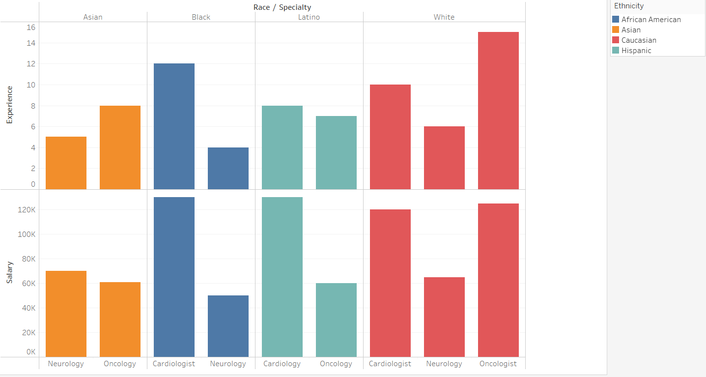

Are YOU represented? Well you should be.
What Are We?
Welcome to SecureCheckup! Historical experiences of discrimination and lack of representation can lead to mistrust and decreased engagement with healthcare systems. Our team tackles that by being dedicated to making sure disproportionately underrepresenting minority groups are represented in healthcare data.
Our Tool
SecureCheckup provides a secure checkup on data that formats it in a way to specifically compare underrepresented groups so the user is able to visually see if the data is skewed. Underrepresented communities experience poorer health outcomes, including higher rates of chronic diseases, maternal mortality, and infant mortality. Patients from underrepresented communities may face difficulties in finding healthcare providers who share their cultural background, language, or socioeconomic status.
How We Built It
The frontend uses HTML/CSS and JavaScript while the backend uses a database in PLSQL on Oracle and visualizes that using Tableau. The front and backend are combined using REST API in JSON using Python. Being able to implement security features such as validating and sanitizing the user's input on the website would help make sure all the patient and medical information is protected on the database.
Data Analyzed
Demographic analysis of gender distribution and diagnosis trends.
The experience levels and salaries of medical staff across different specialties (Neurology, Oncology, Cardiology) categorized by race and ethnicity, highlighting variations in experience and compensation among African American, Asian, Caucasian, and Hispanic groups.
Tracking payment amounts due and amounts paid to monitor billing status.